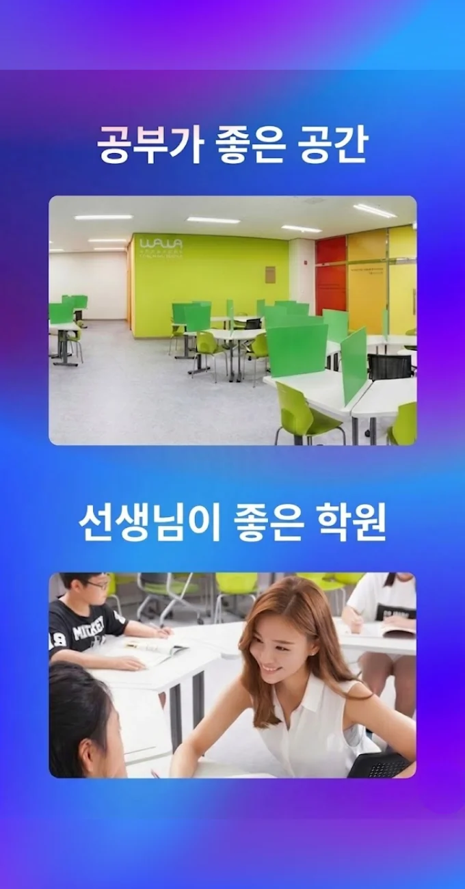

송도동 국어영어학원
송도동 국어영어학원
예컨대 ‘삼각형의 외각은 두 원래 각의 합과 같다’는 문장을 ‘두 원래 각의 합은 삼각형의 외각과 같다’로 바꾸는 것처럼, 의미는 유지하되 구조를 달리 만들면 뇌가 정보를 새롭게 처리하게 됩니다. 이러한 실패의 이면에는 단순한 의지 부족이 아니라, 개개인의 학습 상태를 정밀하게 진단하고 그에 맞는 체계를 구축하는 시스템의 부재가 자리 잡고 있다. 학습 습관 점검 후에는 ‘과제’라는 명목이 아닌 ‘나에게 맞는 보완 행동’으로 교정 안내를 받으며, 정답을 적는 것보다 정답에 이르기까지의 사고 과정을 단계별로 기록하는 훈련을 통해 자신의 오류가 어디서 비롯되었는지 스스로 분석할 수 있게 된다. 이 퀴즈는 단순한 암기 문제보다는 ‘왜 이 문장이 틀렸는가’를 스스로 분석하게 만드는 응용형이어야 하며, 학습 루틴 변경 시 스스로 조정할 수 있도록 유연한 구조로 운영해야 한다. 송도동 국어영어학원은 단원 흐름을 구조화하고 이를 기반으로 시험 평균 점수를 15점 이상 상승시키기 위해, 쉬는 시간에는 스트레칭이나 물 마시기와 같은 신체적 리프레시 활동을 권장한다. 송도동 국어영어학원은 이야기의 결말 예측하기와 같은 활동을 통해 학생들은 자신의 비판적思考能力을 키울 수 있습니다. 포인트 회전비율 조정 루틴도 도입됩니다.